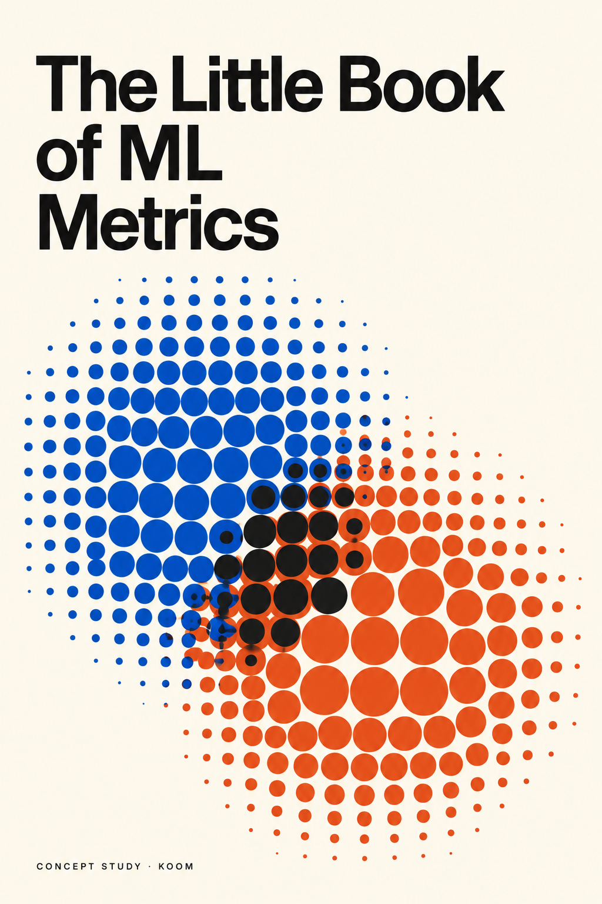

The Little Book
of ML Metrics
A first visual direction: overlapping populations, restrained type, and two strong ink colors.

The overlapping forms suggest classification, ambiguity and trade-offs. They are an abstract cover metaphor, not a scientific diagram or plotted dataset.
The final design would use clean vector construction and controlled typography, carried across the front, spine and back. Printer specifications, page count and back-cover copy determine the final layout.
AI-assisted exploratory image. This is a raster concept, not an approved or print-ready cover. It is not prior paid client work and does not imply an affiliation with Soda or the publisher. No author, ISBN, endorsements or production dimensions have been invented.
Proposed final source: editable SVG and print PDF, subject to agreement. Native Adobe source files are not included.
Open full concept image